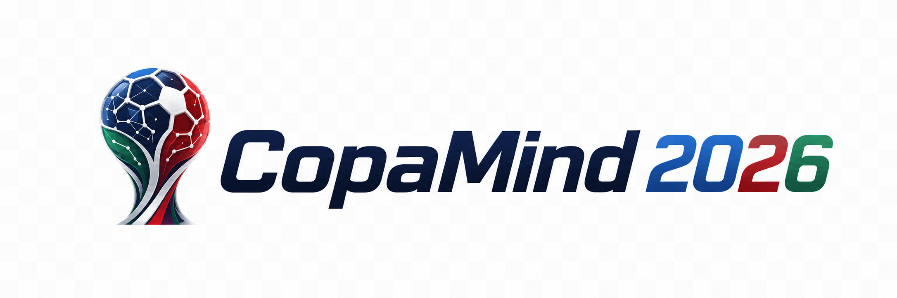

Local AI · ML · RAG · MCP · Agents
Plataforma local e open source de inteligência esportiva. As probabilidades vêm de modelos de ML calibrados (Elo, Poisson, ensemble, Monte Carlo); os LLMs locais apenas interpretam, consultam ferramentas e explicam — nunca "chutam" o resultado. A Copa 2026 é o caso de uso; o projeto é um laboratório de IA aplicada, agentes, dados e explicabilidade.
Elo, Poisson/Dixon-Coles, ensemble e calibração isotônica (Brier/Log-Loss/ECE).
Chances por fase e de título, reprodutível por seed.
Preditores competem com palpites imutáveis e leaderboard (anti-leakage).
Busca híbrida (vetorial + léxico) com proteção contra prompt injection.
Analista → challenger → auditor → consenso + benchmark, sequencial.
Ferramentas read-only e de escrita para o agente/IDE.
Ranking, previsões, bolão, calibração e chat.
Linhagem, snapshot e evidências em cada resultado.
git clone https://github.com/Phemassa/copamind-2026.git
cd copamind-2026
python -m venv .venv && . .venv/Scripts/activate # Linux/macOS: source .venv/bin/activate
pip install -e ".[data,dev]"
copamind ingest sample # dataset de exemplo
copamind simulate # chances de título (Monte Carlo)
pip install -e ".[ui]" && copamind ui serve # dashboard bilíngueFontes → Ingestão (linhagem) → Data lake (DuckDB) + Base textual (Qdrant) → Feature engineering + RAG → Modelos preditivos (Elo/Poisson/ensemble) → Simulador Monte Carlo → MCP + agente → Orquestração de LLMs locais → Interface web.
Qwen3-8B
Llama 3.1 8B / Ministral 8B
Phi-4
bge-m3
Evolução para servidor 24 GB prevista via perfis de hardware (roster 27–32B).